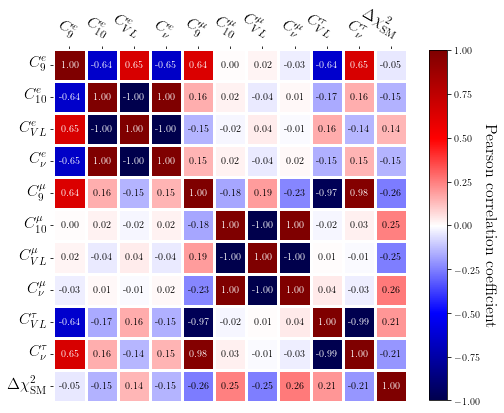
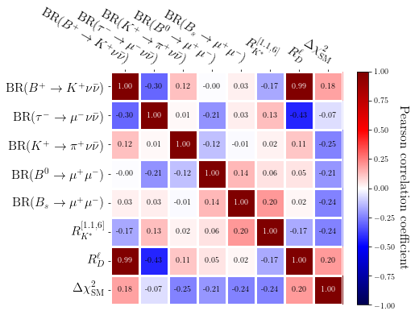

06: Correlations¶
import SMEFT19
from wilson import Wilson
import pandas as pd
Correlations between Wilson coefficients¶
mldata = pd.read_csv('../../samples/mlpoints.dat', sep='\t', names=['C', 'al', 'bl', 'aq', 'bq'], header=0)
points = mldata[['C', 'al', 'bl', 'aq', 'bq']]
points.describe()
| C | al | bl | aq | bq | |
|---|---|---|---|---|---|
| count | 1001.000000 | 1001.000000 | 1001.000000 | 1001.000000 | 1001.000000 |
| mean | -0.132338 | 0.017968 | 0.000421 | -0.028252 | 0.859014 |
| std | 0.029816 | 0.068592 | 0.010462 | 0.029747 | 0.332898 |
| min | -0.290449 | -0.228999 | -0.071919 | -0.196362 | 0.216953 |
| 25% | -0.148312 | -0.062257 | -0.005715 | -0.050447 | 0.610749 |
| 50% | -0.129765 | 0.059703 | 0.000479 | -0.026974 | 0.824694 |
| 75% | -0.112795 | 0.073122 | 0.006694 | -0.005604 | 1.073755 |
| max | -0.004415 | 0.154593 | 0.079235 | 0.117062 | 2.107271 |
from multiprocessing import Pool
def WETcoeffs(i):
w = SMEFT19.scenarios.rotBII(points.values[i])
w2 = w.match_run(eft='WET', basis='flavio', scale=4.8)
d = {}
d.update({'C9e':w2.values['C9_bsee']['Re']})
d.update({'C10e':w2.values['C10_bsee']['Re']})
d.update({'CVLe':w2.values['CVL_bcenue']['Re']})
d.update({'Cnue':w2.values['CL_bsnuenue']['Re']})
d.update({'C9mu':w2.values['C9_bsmumu']['Re']})
d.update({'C10mu':w2.values['C10_bsmumu']['Re']})
d.update({'CVLmu':w2.values['CVL_bcmunumu']['Re']})
d.update({'Cnumu':w2.values['CL_bsnumunumu']['Re']})
d.update({'CVLtau':w2.values['CVL_bctaunutau']['Re']})
d.update({'Cnutau':w2.values['CL_bsnutaunutau']['Re']})
d.update({'logL':mldata.logL[i]})
return d
with Pool(4) as pool:
coeffs = pool.map(WETcoeffs, range(len(points)))
dfcoeff = pd.DataFrame(coeffs)
dfcoeff.describe()
| C9e | C10e | CVLe | Cnue | C9mu | C10mu | CVLmu | Cnumu | CVLtau | Cnutau | logL | |
|---|---|---|---|---|---|---|---|---|---|---|---|
| count | 1001.000000 | 1001.000000 | 1001.000000 | 1001.000000 | 1001.000000 | 1001.000000 | 1.001000e+03 | 1001.000000 | 1001.000000 | 1001.000000 | 1001.000000 |
| mean | -0.295497 | -0.330593 | 0.000439 | -0.012335 | -0.617010 | -0.009080 | 1.074431e-05 | -0.000045 | 0.090123 | -2.587700 | 25.556229 |
| std | 0.152589 | 0.117884 | 0.000159 | 0.004497 | 0.120281 | 0.024743 | 3.237263e-05 | 0.000946 | 0.016995 | 0.491337 | 1.691890 |
| min | -0.827773 | -1.426310 | 0.000003 | -0.054401 | -1.120956 | -0.466560 | -2.671679e-07 | -0.017435 | 0.003007 | -4.687711 | 14.021646 |
| 25% | -0.391263 | -0.401647 | 0.000336 | -0.015033 | -0.696520 | -0.008593 | 2.155592e-06 | -0.000017 | 0.078853 | -2.911886 | 24.907145 |
| 50% | -0.286828 | -0.324112 | 0.000431 | -0.012102 | -0.617186 | -0.004427 | 4.721423e-06 | 0.000119 | 0.090286 | -2.590583 | 25.911228 |
| 75% | -0.198749 | -0.255307 | 0.000533 | -0.009465 | -0.540286 | -0.002577 | 1.026818e-05 | 0.000196 | 0.100933 | -2.267924 | 26.656567 |
| max | 1.163031 | -0.005367 | 0.001876 | 0.000194 | -0.021831 | -0.000070 | 6.050561e-04 | 0.000371 | 0.164586 | -0.090182 | 28.790833 |
dfcoeff.to_csv('../../samples/WETcoeffs.dat', sep='\t', index=False)
dfcoeff_corr = dfcoeff.corr()
dfcoeff_corr
| C9e | C10e | CVLe | Cnue | C9mu | C10mu | CVLmu | Cnumu | CVLtau | Cnutau | logL | |
|---|---|---|---|---|---|---|---|---|---|---|---|
| C9e | 1.000000 | -0.643394 | 0.652116 | -0.652925 | 0.637032 | 0.004849 | 0.020590 | -0.034647 | -0.640282 | 0.654705 | -0.046253 |
| C10e | -0.643394 | 1.000000 | -0.996022 | 0.999922 | 0.158867 | 0.024270 | -0.040480 | 0.014597 | -0.165581 | 0.157421 | -0.148469 |
| CVLe | 0.652116 | -0.996022 | 1.000000 | -0.996108 | -0.145275 | -0.017603 | 0.036489 | -0.008849 | 0.162068 | -0.142238 | 0.142653 |
| Cnue | -0.652925 | 0.999922 | -0.996108 | 1.000000 | 0.146762 | 0.023966 | -0.040413 | 0.015042 | -0.153330 | 0.145049 | -0.146177 |
| C9mu | 0.637032 | 0.158867 | -0.145275 | 0.146762 | 1.000000 | -0.175774 | 0.191982 | -0.234983 | -0.970862 | 0.979020 | -0.255175 |
| C10mu | 0.004849 | 0.024270 | -0.017603 | 0.023966 | -0.175774 | 1.000000 | -0.999140 | 0.998170 | -0.017901 | 0.028310 | 0.247862 |
| CVLmu | 0.020590 | -0.040480 | 0.036489 | -0.040413 | 0.191982 | -0.999140 | 1.000000 | -0.998323 | 0.005204 | -0.011495 | -0.252314 |
| Cnumu | -0.034647 | 0.014597 | -0.008849 | 0.015042 | -0.234983 | 0.998170 | -0.998323 | 1.000000 | 0.041963 | -0.032190 | 0.260354 |
| CVLtau | -0.640282 | -0.165581 | 0.162068 | -0.153330 | -0.970862 | -0.017901 | 0.005204 | 0.041963 | 1.000000 | -0.989444 | 0.206096 |
| Cnutau | 0.654705 | 0.157421 | -0.142238 | 0.145049 | 0.979020 | 0.028310 | -0.011495 | -0.032190 | -0.989444 | 1.000000 | -0.206792 |
| logL | -0.046253 | -0.148469 | 0.142653 | -0.146177 | -0.255175 | 0.247862 | -0.252314 | 0.260354 | 0.206096 | -0.206792 | 1.000000 |
import matplotlib.pyplot as plt
plt.rcParams.update({'text.usetex':True})
import matplotlib
import numpy as np
from matplotlib.colors import ListedColormap
seismic = plt.cm.get_cmap('seismic', 512)
halfseismic = ListedColormap(seismic(np.linspace(0.5, 1, 256)))
def heatmap(data, row_labels, col_labels, ax=None,
cbar_kw={}, cbarlabel="", **kwargs):
"""
Create a heatmap from a numpy array and two lists of labels.
Parameters
----------
data
A 2D numpy array of shape (N, M).
row_labels
A list or array of length N with the labels for the rows.
col_labels
A list or array of length M with the labels for the columns.
ax
A `matplotlib.axes.Axes` instance to which the heatmap is plotted. If
not provided, use current axes or create a new one. Optional.
cbar_kw
A dictionary with arguments to `matplotlib.Figure.colorbar`. Optional.
cbarlabel
The label for the colorbar. Optional.
**kwargs
All other arguments are forwarded to `imshow`.
"""
if not ax:
ax = plt.gca()
# Plot the heatmap
im = ax.imshow(data, **kwargs)
# Create colorbar
cbar = ax.figure.colorbar(im, ax=ax, **cbar_kw)
cbar.ax.set_ylabel(cbarlabel, rotation=-90, va="bottom", fontsize=16)
# We want to show all ticks...
ax.set_xticks(np.arange(data.shape[1]))
ax.set_yticks(np.arange(data.shape[0]))
# ... and label them with the respective list entries.
ax.set_xticklabels(col_labels)
ax.set_yticklabels(row_labels)
# Let the horizontal axes labeling appear on top.
ax.tick_params(top=True, bottom=False,
labeltop=True, labelbottom=False)
# Rotate the tick labels and set their alignment.
plt.setp(ax.get_xticklabels(), rotation=-30, ha="right",
rotation_mode="anchor")
# Turn spines off and create white grid.
for edge, spine in ax.spines.items():
spine.set_visible(False)
ax.set_xticks(np.arange(data.shape[1]+1)-.5, minor=True)
ax.set_yticks(np.arange(data.shape[0]+1)-.5, minor=True)
ax.grid(which="minor", color="w", linestyle='-', linewidth=3)
ax.tick_params(which="minor", bottom=False, left=False)
plt.xticks(fontsize=16)
plt.yticks(fontsize=16)
return im, cbar
def annotate_heatmap(im, data=None, valfmt="{x:.2f}",
textcolors=["black", "white"],
threshold=None, colorcorr=False, **textkw):
"""
A function to annotate a heatmap.
Parameters
----------
im
The AxesImage to be labeled.
data
Data used to annotate. If None, the image's data is used. Optional.
valfmt
The format of the annotations inside the heatmap. This should either
use the string format method, e.g. "$ {x:.2f}", or be a
`matplotlib.ticker.Formatter`. Optional.
textcolors
A list or array of two color specifications. The first is used for
values below a threshold, the second for those above. Optional.
threshold
Value in data units according to which the colors from textcolors are
applied. If None (the default) uses the middle of the colormap as
separation. Optional.
**kwargs
All other arguments are forwarded to each call to `text` used to create
the text labels.
"""
if not isinstance(data, (list, np.ndarray)):
data = im.get_array()
# Normalize the threshold to the images color range.
if threshold is not None:
threshold = im.norm(threshold)
else:
threshold = im.norm(data.max())/2.
# Set default alignment to center, but allow it to be
# overwritten by textkw.
kw = dict(horizontalalignment="center",
verticalalignment="center")
kw.update(textkw)
# Get the formatter in case a string is supplied
if isinstance(valfmt, str):
valfmt = matplotlib.ticker.StrMethodFormatter(valfmt)
# Loop over the data and create a `Text` for each "pixel".
# Change the text's color depending on the data.
texts = []
for i in range(data.shape[0]):
for j in range(data.shape[1]):
if colorcorr:
kw.update(color=textcolors[int(abs(data[i, j]) > threshold)])
else:
kw.update(color=textcolors[int(im.norm(data[i, j]) > threshold)])
text = im.axes.text(j, i, valfmt(data[i, j], None), **kw)
texts.append(text)
return texts
coeff_labels = [r'$C_9^e$', r'$C_{10}^e$', r'$C_{VL}^e$', r'$C_\nu^e$', r'$C_9^\mu$', r'$C_{10}^\mu$',
r'$C_{VL}^\mu$', r'$C_\nu^\mu$', r'$C_{VL}^\tau$', r'$C_\nu^\tau$', r'$\Delta \chi^2_\mathrm{SM}$' ]
fig = plt.figure(figsize=(7,7))
im, cbar = heatmap(dfcoeff_corr, coeff_labels, coeff_labels, cbarlabel='Pearson correlation coefficient',
cmap=seismic, vmin=-1, vmax=1, cbar_kw={'shrink':0.72})
_ = annotate_heatmap(im, colorcorr=True)
plt.tight_layout(pad=0.5)
fig.savefig('../../plots/coeffcorr.pdf')

Correlations between observables¶
def observables(i):
d = {}
d.update({'BR(B->Knunu)':SMEFT19.SMEFTglob.prediction(list(points.values[i]), 'BR(B+->Knunu)', SMEFT19.scenarios.rotBII )})
d.update({'BR(tau->mununu)':SMEFT19.SMEFTglob.prediction(list(points.values[i]), 'BR(tau->mununu)', SMEFT19.scenarios.rotBII )})
d.update({'BR(K->pinunu)':SMEFT19.SMEFTglob.prediction(list(points.values[i]), 'BR(K+->pinunu)', SMEFT19.scenarios.rotBII )})
d.update({'BR(B->mumu)':SMEFT19.SMEFTglob.prediction(list(points.values[i]), 'BR(B0->mumu)', SMEFT19.scenarios.rotBII )})
d.update({'BR(Bs->mumu)':SMEFT19.SMEFTglob.prediction(list(points.values[i]), 'BR(Bs->mumu)', SMEFT19.scenarios.rotBII )})
d.update({'RK*':SMEFT19.SMEFTglob.prediction(list(points.values[i]), ('<Rmue>(B0->K*ll)', 1.1, 6.0), SMEFT19.scenarios.rotBII )})
d.update({'RD*':SMEFT19.SMEFTglob.prediction(list(points.values[i]), 'Rtaul(B->Dlnu)', SMEFT19.scenarios.rotBII )})
d.update({'logL':mldata.logL[i]})
return d
with Pool(4) as pool:
obs = pool.map(observables, range(len(points)))
dfobs = pd.DataFrame(obs)
dfobs.describe()
| BR(B->Knunu) | BR(tau->mununu) | BR(K->pinunu) | BR(B->mumu) | BR(Bs->mumu) | RK* | RD* | logL | |
|---|---|---|---|---|---|---|---|---|
| count | 1.001000e+03 | 1001.000000 | 1.001000e+03 | 1.001000e+03 | 1.001000e+03 | 1001.000000 | 1001.000000 | 1001.000000 |
| mean | 5.832276e-06 | 0.172787 | 9.068352e-11 | 1.143158e-10 | 3.683800e-09 | 0.857612 | 0.352128 | 25.556229 |
| std | 3.158853e-07 | 0.000052 | 2.930809e-11 | 1.037407e-13 | 4.494991e-11 | 0.046022 | 0.010889 | 1.691890 |
| min | 4.434651e-06 | 0.172539 | 6.415201e-11 | 1.139860e-10 | 3.667878e-09 | 0.542556 | 0.298487 | 14.021646 |
| 25% | 5.622115e-06 | 0.172764 | 6.806756e-11 | 1.142666e-10 | 3.672269e-09 | 0.828341 | 0.344813 | 24.907145 |
| 50% | 5.822504e-06 | 0.172798 | 8.075610e-11 | 1.142909e-10 | 3.675511e-09 | 0.857792 | 0.352186 | 25.911228 |
| 75% | 6.034632e-06 | 0.172825 | 1.029788e-10 | 1.143339e-10 | 3.682818e-09 | 0.886991 | 0.359026 | 26.656567 |
| max | 7.340996e-06 | 0.172890 | 3.179709e-10 | 1.152198e-10 | 4.530237e-09 | 1.048596 | 0.401289 | 28.790833 |
dfobs.to_csv('../../samples/observables.dat', sep='\t', index=False)
dfobs_corr = dfobs.corr()
dfobs_corr
| BR(B->Knunu) | BR(tau->mununu) | BR(K->pinunu) | BR(B->mumu) | BR(Bs->mumu) | RK* | RD* | logL | |
|---|---|---|---|---|---|---|---|---|
| BR(B->Knunu) | 1.000000 | -0.300380 | 0.122322 | -0.004065 | 0.030784 | -0.170291 | 0.988839 | 0.183014 |
| BR(tau->mununu) | -0.300380 | 1.000000 | 0.014110 | -0.211179 | 0.031810 | 0.128852 | -0.426578 | -0.065155 |
| BR(K->pinunu) | 0.122322 | 0.014110 | 1.000000 | -0.122082 | -0.010988 | 0.023591 | 0.111402 | -0.245444 |
| BR(B->mumu) | -0.004065 | -0.211179 | -0.122082 | 1.000000 | 0.140494 | 0.055758 | 0.052506 | -0.205183 |
| BR(Bs->mumu) | 0.030784 | 0.031810 | -0.010988 | 0.140494 | 1.000000 | 0.202628 | 0.016650 | -0.244724 |
| RK* | -0.170291 | 0.128852 | 0.023591 | 0.055758 | 0.202628 | 1.000000 | -0.167126 | -0.242315 |
| RD* | 0.988839 | -0.426578 | 0.111402 | 0.052506 | 0.016650 | -0.167126 | 1.000000 | 0.198945 |
| logL | 0.183014 | -0.065155 | -0.245444 | -0.205183 | -0.244724 | -0.242315 | 0.198945 | 1.000000 |
obs_labels = [r'BR($B^+\to K^+ \nu\bar{\nu}$)', r'BR($\tau^-\to \mu^- \nu\bar{\nu}$)',
r'BR($K^+\to \pi^+ \nu\bar{\nu}$)', r'BR($B^0\to \mu^+ \mu^-$)', r'BR($B_s\to \mu^+ \mu^-$)',
r'$R_{K^*}^{[1.1,6]}$', r'$R_D^\ell$', r'$\Delta\chi^2_\mathrm{SM}$']
fig = plt.figure(figsize=(7,7))
im, cbar = heatmap(dfobs_corr, obs_labels, obs_labels, cbarlabel='Pearson correlation coefficient',
cmap=seismic, vmin=-1, vmax=1, cbar_kw={'shrink':0.65})
_ = annotate_heatmap(im, colorcorr=True)
plt.tight_layout(pad=0.5)
fig.savefig('../../plots/obscorr.pdf')
